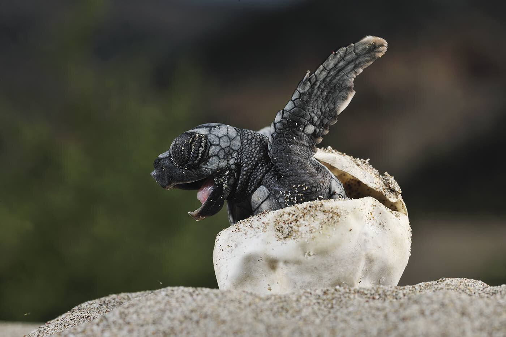

Due to human activities like illegal hunting, plastic pollution, and climate change, turtles are threatened on a global scale. A non-profit, all-volunteer organization called Turtle Savers provides funding to the keepers who protect sea turtles and their eggs from poachers. Keepers of sea turtles make a difference! They patrol the beach at night, safeguarding nesting turtles as they lay their eggs and ensuring the safety of her eggs. Baby turtles are guarded on their first trip to the ocean when they leave their nests months later. Your contributions assist localities in creating sustainable economies based on the preservation of sea turtles.
We Save Turtles For The Future

- Billion Baby Turtles supports important turtle nesting beaches gobally. More than 9 million saved so far and every $1 donated helps save at least 10 endangered hatchlings.
- Too Rare To Wear works to end the trade for products made from the shell of the critically endangered hawksbill turtle.
- Sea Turtles & Plastic supports efforts to clean plastic from turtle habitats and turn that waste into products that support conservation & communities.
Donate To Help Save Sea Turtles
Baby Turtle Adoption
Through a symbolic adoption, you may help conserve endangered turtle hatchlings. Considering your budget and the adoption gifts that come with each level, you can choose how many adoptions to save from our range of adoption levels. The money will be used to save young sea turtles at significant nesting beaches throughout the globe. Each Billion Baby Turtles adoption packet includes a unique adoption certificate in addition to other cool items.

Available Options
- 300 Baby Turtles ($30): Comes with a personalized certificate, a set of hatchling postcards, and stickers.
- 500 Baby Turtles ($50): Comes with a reusable metal straw, certificate, postcards, and stickers.
- 1,000 Baby Turtles ($100): Comes with a leatherback turtle hatchling photo print, reusable metal straw, certificate, postcards, and stickers.
Adoption Process
- Fill out the adoption form below.
- Pay the adoption fee of $50 via PayPal.
- Our team will review your application.